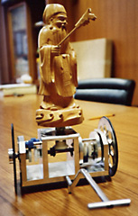

Der "nach Süden zeigende Wagen" aus China, wird auf 2600 v. Chr. datiert. Auf ihm steht eine Figur, die immer nach Süden zeigt, unabhängig von der Ausrichtung des Wagens. Eine Pionierleistung auf dem Gebiet der Navigation. Es wird angenommen, dass dieser "Kompass" von Chinesen verwendet wurde um die Wüste Gobi zu durchqueren und zu erforschen. Manche dieser Geräte besitzen Trommeln, die bei jeder Umdrehung der Wagenräder schlagen, was darauf hinweist, dass dieses Gerät auch als Entfernungsmesser genutzt werden konnte.